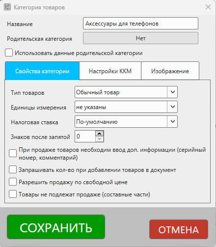
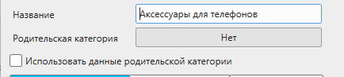
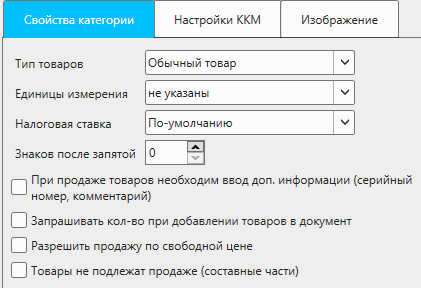
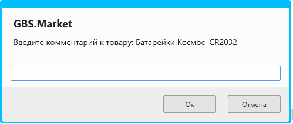
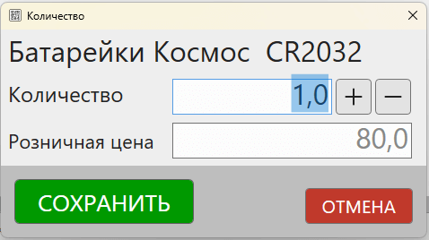
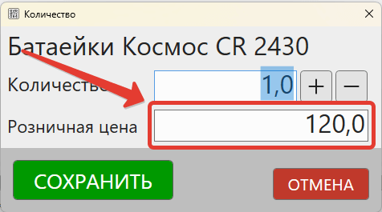
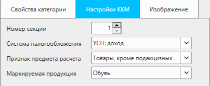
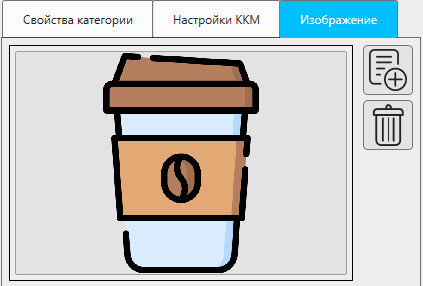

Категория (группа) товаров предназначена для объединения товаров, имеющих одинаковые признаки, характеристики и логику продажи.
В меню главной формы нажмите Товары – Категории товаров, а затем создайте новую или выберите для редактирования, чтобы открыть карточку категории.

Основные параметры

Название
В качестве названия категории можно ввести краткое описание группы товаров, например:
- Батарейки
- Женские куртки
- Молоко
Родительская категория
С помощью указания родительской категории можно выстроить дерево категорий, например:
- Бытовая техника
- Телевизоры
- Телевизоры 32 дюйма
- Телевизоры 40 дюймов
- Мобильные устройства
- Смартфоны
- Планшеты
- Телевизоры
Разделение товаров на подкатегории позволяет группировать схожие типы товаров в одной родительской категории, но при этом иметь возможность фильтрации по подкатегориям.
Нажмите на кнопку, чтобы выбрать родительскую категорию.
Использовать данные родительской категории
Опция позволяет использовать параметры родительской категории (если она указана) для текущей.
Т.е. если родительская категория имеет схожие свойства, то можно воспользоваться этой опцией, не прописывая их отдельно для подкатегории.
Будут использоваться свойства, которые указываются на вкладках "Свойства категории" и "Настройки ККМ".
Свойства категории
Вкладка с основными свойствами категории (группы) товаров.

Тип товаров
Тип товаров определяет набор логики в поведении программы при выполнении действий с товарами из категории.
Доступны варианты:
- Обычный товар – товары, которые не подходят под описание остальных типов. Обычно, это штучные товары.
- Весовой товар – при выполнении действий с такими товарами будет запрашиваться значение (кол-во) с весов, если они подключены к программе
- Услуги – для таких товаров будет доступно изменение цены в процессе продажи. Поступления для услуг недоступны.
- Подарочные сертификаты – позволяет создавать наборы подарочных сертификатов для их продажи и использования.
- Модификации товаров - дополнительные свойства, определяющие логику работы с товарами
Важно
Обратите внимание, что изменение типа товара после того, как в категорию уже добавлены товары, в большинстве случаев недоступно. Например, нельзя изменить тип товара с "Обычный товар" на "Услуги", "Услуги" на "Подарочные сертификаты" и т.д.
Налоговая ставка (НДС)
Значение налоговой ставки (НДС) для товаров, которые входят в данную категорию.
Значение налоговой ставки передается в ККМ (онлайн-кассу) и в печатные документы (счета, накладные, ТОРГ-12 и т.п.)
Полезные материалы
Единицы измерения
Единицы измерения могут быть переданы в печатаемые документы, например, счет, ТОРГ-12 и т.п.
Некоторые свойства единиц измерения могут передаваться в ККМ, например, тег 2108 для онлайн-касс.
Редактирование единиц измерения происходит в настройках программы.
Знаков после запятой
Данная опция позволяет ограничить количество дробных (после запятой) знаков при вводе количества товара. Например, используя эту опцию можно запретить ввод дробных значений для товаров, продаваемых поштучно.
Для работы ограничения необходимо, чтобы была включена опция Ограничивать количество знаков после запятой в Файл - Настройки - Действия с товаром.
Подробнее об ограничении ввода дробных значений описано в статье.
При продаже товаров необходим ввод доп. информации
Если данная опция включена, то при добавлении товаров из этой категории в чек, программа будет запрашивать ввод комментария.
Например, при продаже бытовой техники можно в комментарии для товара фиксировать серийный номер.
Для товаров, подлежащих маркировке, комментарий (код маркировки) запрашивается всегда.

Запрашивать кол-во при добавлении товаров в документ
Если данная опция включена, то при добавлении товаров из этой категории в документ, программа будет запрашивать ввод количества.
Например, если товары из такой категории всегда продаются в количестве, больше чем 1 шт, эта опция может ускорить процесс продажи.
Данная опция автоматически активируются для товаров с типом "весовой".

Разрешить продажу по свободной цене
Если данная опция включена, то при изменении количества в чеке для товаров данной категории будет доступно изменение и цены товара.
Для товаров типа "услуги" изменение цены всегда доступно.

Товары не подлежат продаже (составные части)
Если данная опция включена, то товары из этой категории не будут доступны для продажи. Они не будут отображаться в окне поиска и на главной форме режима "Кафе".
Товары, входящие в категорию с включенной опцией, обычно используются в роли составных частей или ингредиентов в составных товарах (комплектах, рецептах производства).
Настройки ККМ
Свойства категории (группы) товаров, которые обычно передаются в фискальный регистратор (ККМ).

Номер секции
Номер секции (отдела), который передается в кассу.
Важно!
Данная настройка не имеет отношения к секциям (рабочим местам), которые создаются в базе данных.
Система налогообложения
СНО, которая подходит для товаров, входящих в данную категорию.
Если выбрать "не указано", будет использоваться СНО, указанная по умолчанию в настройках.
Важно!
В одном чеке могут быть товары только с одной СНО, т.к. в чеке система налогообложения указывается именно для чека, а не отдельного товара.
Признак предмета расчета
Значения тега "Признак предмета расчета" (1212) согласно формату фискальных документов по 54-ФЗ.
Опция актуальна только для онлайн-касс, используемых на территории России.
Маркируемая продукция
Тип маркируемой продукции для товаров, входящих в данную категорию.
Если товары в категории не подлежат маркировке, необходимо выбрать соответствующий вариант.
Доступны варианты (для России):
- Не подлежит маркировке
- Лекарства
- Табачные изделия
- Обувь
- Парфюм
- Шины/покрышки
- Легкая промышленность
- и другие типы, поддерживаемые программой
Для других стран могут использоваться локальные значения типов маркируемой продукции.
Полезные материалы
Изображение
Для категории (группы) товаров можно установить одно изображение. Изображение будет показано в меню в режиме "Кафе", если включена опция в настройках.

Добавить
Кнопка "Добавить" Нажмите кнопку, чтобы добавить изображение
Нажмите на кнопку "Добавить", чтобы добавить новое изображение или заменить существующее. Так же при клике на поле с изображением можно добавить новое или заменить существующее.
Поддерживаются форматы bmp, jpeg, png.
Важно
При добавлении изображения оно будет сжато и уменьшено до размера 1024 пикселей по большей стороне, если изначальный размер превышает данное значение. Исходный файл при этом не будет изменен.
Удалить
Кнопка "Удалить" Нажмите на кнопку, чтобы удалить изображение
Чтобы удалить ранее установленное изображение для категории, нажмите на кнопку удалить.
Завершение редактирования
Сохранить

Нажмите кнопку "Сохранить", чтобы сохранить все внесенные изменения в карточку категории товаров.
Отмена

Нажмите кнопку "Отменить", чтобы сбросить все изменения, которые были сделаны в карточке категории после её открытия.
Программа запросит подтверждение на отмену, если какие-то свойства в карточке были изменены и не сохранены.
Вопросы и ответы
Как указать, что товар весовой?
Для того, чтобы указать, что товар является весовым, необходимо создать категорию товаров, в карточке которой необходимо будет:
- в поле тип товаров указать "весовые товары"
- в поле знаков после запятой указать, например, значение 3
В момент продажи таких товаров:
- при добавлении товара в чек программа запросит ввод количества
- если к программе подключены весы, значение кол-ва будет получено с весов